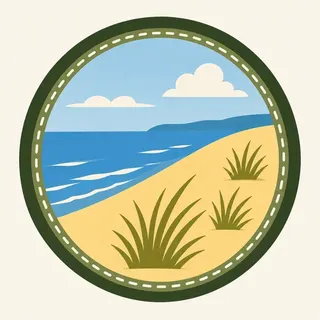

01
Fifteen miles
The statistics-minded pages agree on 15 miles of southern Lake Michigan shoreline. The painting is that line, with the sand in front of the trees.
TrailMark Archive Edition
Indiana | Lake Michigan
A national lakeshore on November 5, 1966. A national park on February 15, 2019.
Archive No. TM-INDU-043
National Park since 2019
Collection Lake Michigan shore
Park Overview
Congress authorized Indiana Dunes National Lakeshore on November 5, 1966. On February 15, 2019, the same place became Indiana Dunes National Park, the 61st national park.
The history page says the 1966 law covered 8,330 acres, and that expansion bills in 1976, 1980, 1986, and 1992 grew it past 15,000 acres. The park statistics page lists fiscal year 2025 acreage at 16,035. Older pages say 15,349, about 15,000, or 16,000. This essay uses the statistics page. Fifteen miles of Lake Michigan shoreline is the figure those pages share.
Henry Chandler Cowles, Senator Paul H. Douglas, and Dorothy Buell are the three people the history page credits. The Kennedy Compromise created both a port and a park. Douglas and Save the Dunes were disappointed by that bargain even as the lakeshore passed.
Emotional Thesis
Dune grass in the foreground, pines on the ridge, and the long curve of Lake Michigan. The homepage says wind and waves shaped that shore for millennia. The 1966 law was the political version of the same sentence: keep some of it.
The name change in 2019 did not, the FAQ says, change the relationship with Indiana Dunes State Park. They are different owners on the same shore. The national park is not the state park.
Landscape Highlights
01
The statistics-minded pages agree on 15 miles of southern Lake Michigan shoreline. The painting is that line, with the sand in front of the trees.
02
The basic-information page lists beaches, dunes, forests, and wetlands, and more than 1,100 native plant species. The homepage says more than 50 miles of trails through shifting dunes, woods, prairies, and wetlands.
03
The audio brochure says the deal that protected the dunes also created the Port of Indiana. The industrial shore is not outside the story. It is why the park is a strip and not a blank coast.
Wildlife
The basic-information page calls the park among the most biologically rich in the nation for its birding and for more than 1,100 native plant species.
01
The extra drawing is a blue butterfly on a blue flower. The pages used here do not name that insect or that plant. The caption does not invent a species.
02
More than 1,100 plants is the basic-information figure. It is not a list.
03
Bird diversity is named and not counted in the sentences this essay uses.
Geology
The homepage says Lake Michigan has shaped the dunes for millennia, and that the habitats are a mosaic along 15 miles of coast.
01
Shifting sand is the homepage's phrase. Stay on the marked trail. A park guide says stay off the dunes.
02
The statistics page is about acres, not dune height. No dune elevation is added.
03
The port and the park were one legislative bargain. The geology and the industry share the shore.
The shore is the obvious season. Fees, if charged, are on the NPS page and are not frozen here. The state park next door charges its own fee.
A park guide notes that the beach can be much colder or hotter than the woods. Dress for the zone you are walking into.
Prairies and wetlands are part of the mosaic when the beach is empty. Trail closures after storms are posted by the park.
Shelf ice and high waves are a hazard the park warns about. Watch from a safe distance. This essay does not describe how to walk on ice.
Photography
Sand without water is a pile. Water without dunes is any Great Lakes beach. The park is the meeting.
01
The guide says stay on marked trails and off the dunes. The picture is not a reason to cut the slope.
02
A mill on the horizon is part of the Kennedy Compromise. Cropping it out is a choice. Say so if you do.
03
The state park and the national park share a name and not a boundary. Know which fee and which rule you are under.
Field Notes
They saved a shore by agreeing to a port. The dunes in the painting are what that bargain left standing.
TrailMark Field Notes

Badge Story
The mark is Lake Michigan, marram grass, and a pine line. A desert dune would be the wrong sand.
Water on the left, sand falling toward it.
A flower or a bird can stand for the biological richness. Neither is a census.
Do not reuse the Great Sand Dunes wall. This sand meets a freshwater sea.
Archive No.043
LocationLake Michigan
ReleaseDune Mark
Stewardship / Safety
Rip currents, ticks, and closed trails are current notices. The statistics page will update the acreage. The rules update faster.
Stay on marked trails and off the dune faces. The sand is the resource Cowles studied.
The state park is a different entrance and a different fee. The 2019 name change did not merge them.
Swim only where the park says the water is safe that day. The lake is not a pool.
The park has not finished buying the authorized boundary. A private edge is still private.
Current conditions, fees, and alerts are on the National Park Service site.
Continue the Archive
One is a river valley between Cleveland and Akron. This one is the Indiana shore of Lake Michigan. Sleeping Bear is not a national park in this archive.